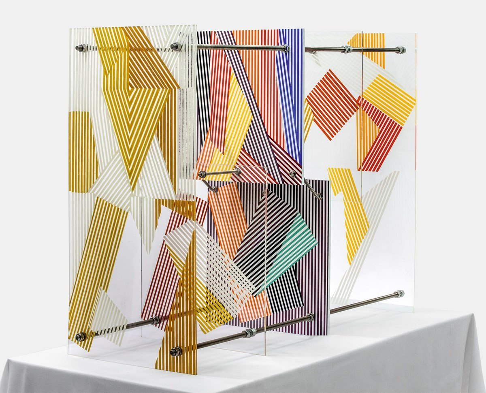
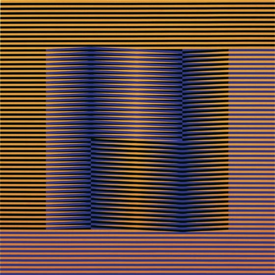
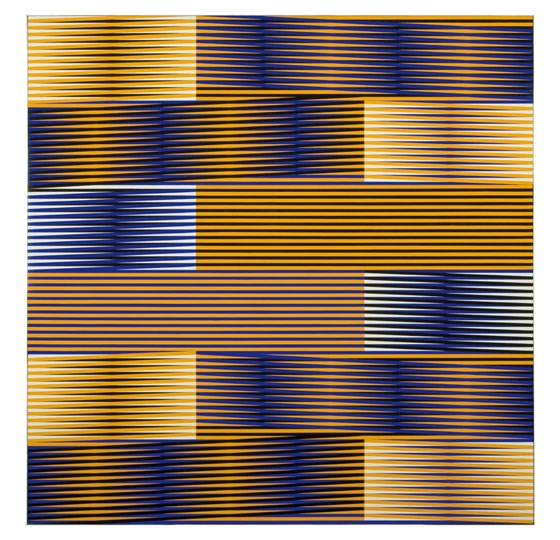
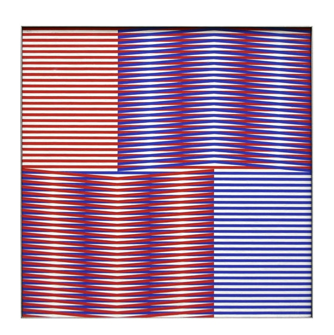

CiNeTiSmO
El cinetismo llama a descubrir imágenes ocultas, impresiones inciertas e intermitentes a causa de las ilusiones de desplazamiento y vibración.!
El cinetismo llama a descubrir imágenes ocultas, impresiones inciertas e intermitentes a causa de las ilusiones de desplazamiento y vibración.!

Cruz Diez
El trabajo de Cruz-Diez se estructura en torno a ocho investigaciones cromáticas desarrolladas a lo largo de su carrera: Couleur Additive, Physichromie, Induction Chromatique, Chromointerférence, Transchromie, Chromosaturation, Chromoscope y Couleur à l'Espace.
GALERIA


